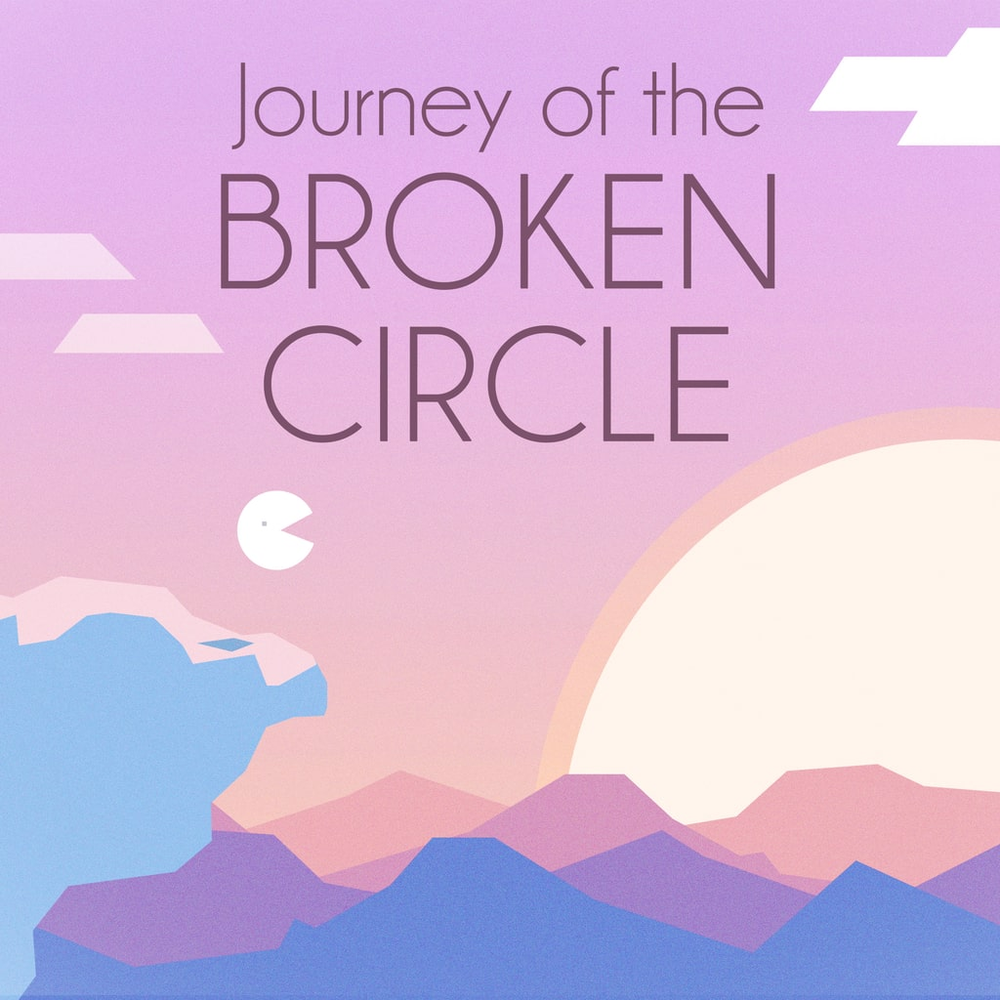

 Journey of the Broken Circle
Details
Description
"an experience everyone should play through at least once" - Nintendo World Report
Meet fascinating characters on your quest to complete the imperfect Circle. New partners bring unique abilities and their own personality to roll with...
In this 3-5 hours adventure, full of ups and downs but always playful and rewarding, the Circle learns about itself and you, along with it.
• "The perfect mix of platform-puzzling goodness, and deep, profound story-telling." Cubed3
• “It is a minimalist romantic tale that plumbs the depth of human emotion, examining angst and anxiety and impermanence. For a game populated by talking trees, circles and balloons, it depicts a universally human story in a genuinely lovely way.” Pure Nintendo
• “Visually, the game is simple yet striking. The clever use of the minimal color palette makes for stunning environments that are both varied and memorable.” COGconnected
• “Journey of the Broken Circle is a unique and special type of game.” Nintendo World Report
DEVELOPED BY Lovable Hat Cult
“It’s a game about this little something that always seems to be missing…a better job, a nicer place to live, an ideal relationship… We wanted to tell a story of self-discovery in a fun, universal and relatable way. We probably also wanted to answer our own questions: would the Circle find what it was looking for? Or how would it all end?” - Andrea & Patrick from the Copenhagen-based studio.
PUBLISHED BY Nakana.io
“We gather games that share a strong experience to remember. We hope you’ll enjoy the sweet and tasteful food for thought served by Journey of the Broken Circle!” - Mikaël Bourget, founder of the publishing label.